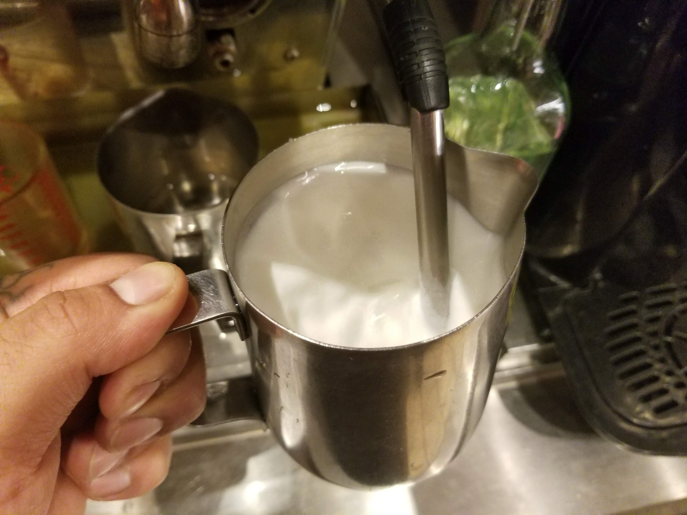
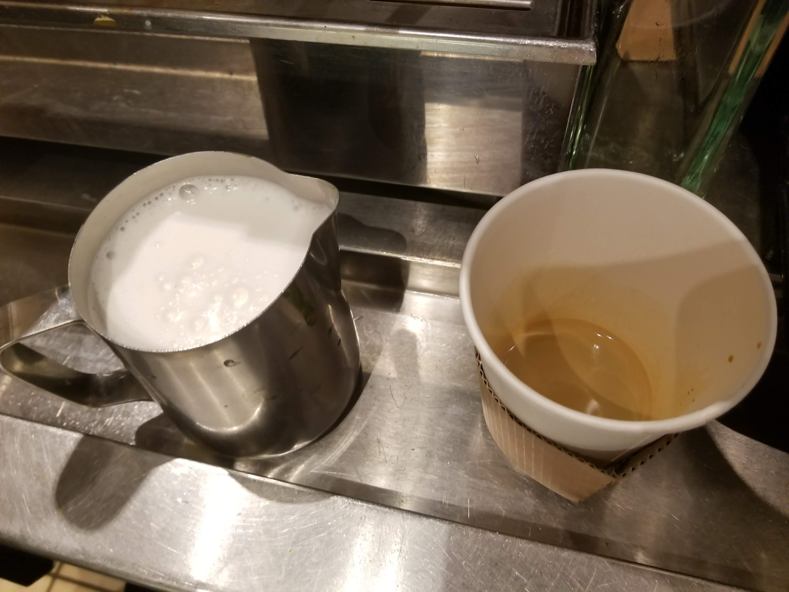

Use the steamer to heat up the milk in a circular motion. Keep the nozzle right below the surface of the milk to create foam. DO NOT remove the container before shutting of the steam, this will create a mess.
Now you have steamed milk and two ounces of expresso
